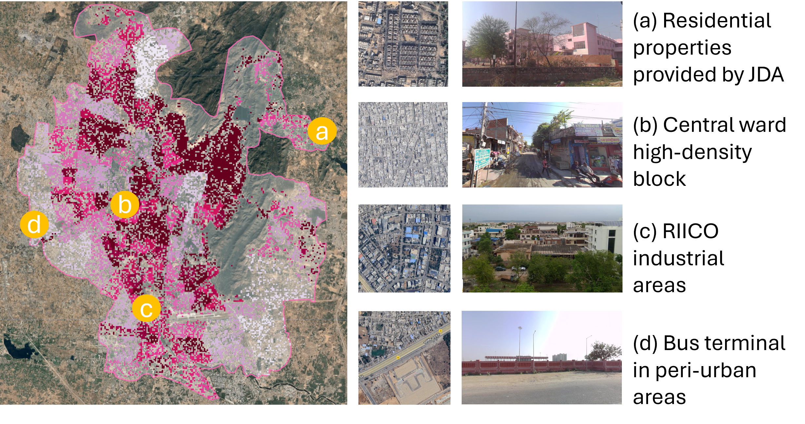
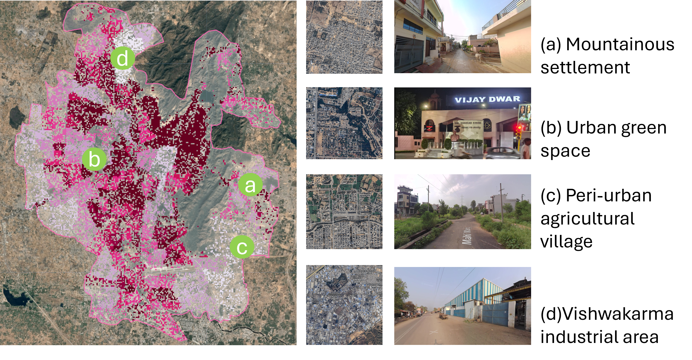

Chapter 5 Discussion
5.1 Evaluating Population Disaggregation: Strengths and Localised Biases
The MGWR-based disaggregation of residential population reproduced Jaipur’s overall settlement structure and corresponded well with GHSL benchmarks across much of the distribution. Residual analysis, however, revealed systematic deviations: dense zones were often overestimated, while environmentally constrained or low-density areas were underestimated. These biases reflect both the inherent limits of remote sensing proxies—nighttime lights, building volume, and POI kernel density—and the restricted variable sets, which cannot capture the full drivers of population variation.
Overestimation was not confined to the city core. Central wards near the Walled City were inflated mainly by the combination of dense commercial POI and saturated nighttime lights, even though most buildings are only one or two storeys. Outside the core, similar inflation appeared in other contexts. Clusters of JDA Quarters—standardised three-storey housing estates built by the Jaipur Development Authority—were systematically assigned higher population than neighbouring peri-urban blocks of detached houses. Likewise, large transport hubs drew disproportionate allocations because of strong POI signals, despite having little residential stock nearby.
By contrast, underestimation occurred in three main settings. In the northern Aravalli fringes, hillside villages remained weak in all three proxies (low lights, low residential volume, sparse POI). Within the city, large and greener institutional or open complexes showed little residential signal, reducing estimates even where dwellings were present. In peri-urban agricultural zones, dispersed housing embedded in cropland also produced faint signals, despite census and imagery evidence of sustained habitation.
Two structural factors further reinforced these patterns. First, the residential mask excluded some areas in advance as non-residential. Where dwellings existed outside the mask, the population had to be concentrated into the remaining residential cells, inflating estimates there. Second, the proxies themselves reflect built and service intensity rather than actual occupancy. This left the model insensitive to underused housing stock and to residential uses embedded within non-residential settings.
Industrial and mixed-use environments showed especially mixed results. Some estates were overestimated, where industrial sheds, intense lighting, and business-related POI were misread as residential signals—such as several RIICO industrial blocks. Others were underestimated, where worker housing or embedded residences produced only weak proxy values—such as the Vishwakarma industrial area in the north. These contrasts highlight the ambiguity of proxies, where economic signals do not equate to residential population, and underline the absence of variables that could separate economic from residential land uses.
To illustrate how these mechanisms manifest across Jaipur, eight selected sites—four overestimated and four underestimated—are presented with satellite imagery and street-level views (Figure 5.1 and Figure 5.2).

Figure 5.1: Spatial Distribution of four Population Overestimation Cases in Jaipur City (Basemap: Google).

Figure 5.2: Spatial Distribution of four Population Underestimation Cases in Jaipur City (Basemap: Google).
5.2 Interpreting the EAI: Potentials and Methodological Limits
The Economic Activity Index (EAI), derived from PCA, provides a compact representation of variation in Jaipur’s economic environment. Its value lies not in the statistical process itself but in how it can be interpreted as a proxy for economic activity. One strength is its general alignment with the settlement structure. High values appeared in built-up corridors and dense residential areas, showing that variables such as built-up density, road density, POI density, population density, and nighttime lights captured major aspects of spatial intensity. Yet divergences also emerged. In the Vishwakarma industrial area, EAI values were high despite limited residential population, reflecting the influence of workplace POI and strong illumination. By contrast, some estates in RIICO industrial blocks showed high values both for population and for the EAI, pointing to the overlap between employment and nearby housing. These cases show that the EAI not only reflects population distribution, but also highlights workplaces and infrastructure that shape the urban economy.
At the same time, the PCA loadings raise interpretive challenges. A first issue is polarity. NDVI loaded negatively on PC1, which meant greener areas systematically reduced EAI values. This is statistically consistent because vegetation is often inversely related to built-up density. However, in planning practice, green space is usually seen as improving the attractiveness and competitiveness of a city, so the sign is opposite to standard expectations. A similar problem is that some variables that are central to urban economies, such as large transport infrastructure, received relatively low weights because their correlations with other variables were weaker. This illustrates the tension between PCA’s simplification of data structure and the multidimensional nature of urban economic life.
A broader limitation concerns PCA’s role as a weighting device. PCA assumes that all indicators are reflections of one hidden factor and can be treated as similar in meaning. But economic activity is not like this. It is formed by different elements—such as density, accessibility, and services—that are not the same and cannot replace each other. If PCA is applied mechanically, important dimensions may receive low weights simply because they do not co-vary strongly with others. This creates two risks. First, dimensions that are theoretically central, such as accessibility or service location, may be undervalued in the index. Second, the results have limited transferability. The weights are sample- and time-dependent, so the same variable may play very different roles across cities or over time. For example, in Jaipur, NDVI reduced the index because vegetation marks peripheral or low-density areas. In contrast, in other cities, green areas may be associated with high-value residential or commercial districts. Similarly, the role of POI may shift over time as services cluster or disperse. These contingencies make it challenging to interpret PCA-based indices consistently and weaken their robustness as general measures.
In summary, the EAI is best seen as a descriptive surface. It reveals spatial contrasts in Jaipur’s economic environment and highlights zones where settlement and infrastructure overlap or diverge. However, polarity mismatches, the down-weighting of theoretically important variables, and the dependence of weights on context all point to the limits of PCA as a basis for generalisable measures.
5.3 Evaluating the GEE Web App for Digital Planning
The GEE web app in this study served as a medium for delivering analytical results rather than as a modelling tool. Its use highlights both strengths and limits for digital planning. Outputs from the population disaggregation and the EAI were made available through the app, allowing planners, researchers, and potentially wider audiences to interact with the findings. Most of the data processing was undertaken in Python using the geemap package, which integrated vector layers with large remote sensing datasets, while the app itself demonstrated how outputs can be translated into an accessible form. Compared with conventional Planning Support Systems (PSS), which often depend on proprietary software, specialist training, and localised data integration, the GEE-based interface benefits from cloud computing and globally available datasets, making it easier to share and update. Its strengths lie in accessibility and interactivity, though limitations remain: GEE’s modelling functions are constrained for more complex processes, and concerns about data governance and security persist, as GEE is a commercial platform. (Zhao et al. 2021).
The main contribution of the GEE environment is that it lowers technical barriers. Its code editor, documentation, and instant visualisation make it more approachable for planners with GIS backgrounds than traditional programming environments. This reduces reliance on external experts and allows practitioners to experiment directly with data rather than passively receiving outputs from opaque models. By lowering the entry threshold, GEE also opens opportunities for broader participation. Members of the public with an interest in urban issues can use the same tools to explore spatial data, test analyses, and contribute to debates on city futures. In this way, GEE functions not only as an analytical instrument but also as a participatory platform.
As Daniel and Pettit (2021) note, professional planners have often lagged in adopting digital tools, lacking the skills to interpret or build models independently. Platforms like GEE help bridge this gap by combining coding and geospatial analysis in a single environment. This allows planners to test, adapt, and visualise models in real time, making the platform more than a channel for sharing results. It can act as a bridge towards more active forms of digital planning practice. Looking ahead, GEE’s capacity to integrate machine learning with remote sensing inputs points to possible predictive applications, supporting planners in monitoring and anticipating urban change. While such uses were not explored here, they suggest that cloud platforms could evolve into lightweight and flexible alternatives to traditional PSS, particularly in data-scarce contexts.
5.4 Limitations and Transferability
At the data level, each proxy brings uncertainty. Nighttime lights are widely used for population/GDP, but their relationships are non-linear and non-uniform. In Jaipur, they correlate well with built-up density, yet saturation and temporal noise can reduce their reliability of population estimates in dense urban cores, while inhabited but poorly lit areas remain underestimated (Wu et al. 2023). For economic activity, the sensitivity of lights to GDP varies across sectors and settlement types, so economic changes in services or agriculture may not be consistently reflected (Bluhm and McCord 2022). Also, building volume improves representation of urban morphology, but it is still subject to footprint inaccuracies and height errors. Moreover, residential population density is used as a proxy to reflect economic activity, resulting in overlooking daytime and transient groups that strongly shape the urban economy.
At the methodological level, the models also have limits. MGWR reveals spatial heterogeneity but is bounded by the chosen covariates (e.g., tenure, migration, informal processes lie outside scope). PCA compresses multiple indicators but its polarity, sample dependence, and interpretive ambiguity weaken robustness as a stable metric.
Regarding transferability, the findings point to both potential and caution. Proxies that perform strongly in Jaipur—such as lights or built-up density—may be less reliable in cities with different infrastructures, economies, or morphologies. Even so, the overall framework has wider relevance for data-scarce contexts. By combining open remote sensing data with lightweight analytical models, it offers a replicable entry point for estimating urban activity. But local conditions must guide interpretation. Factors such as metropolitan scale, growth history, or ethnic composition will shape how results should be understood.
Possible improvements can also be noted. Integrating multiple sources of remote sensing, such as SAR for built-up detection, LiDAR for vertical structure, or higher-frequency composites of nighttime lights, would reduce dependence on any single proxy. Beyond residential indicators, incorporating dynamic datasets such as commuting flows, mobile phone records, or origin–destination surveys could add an ambient population perspective. Even if such data are only available at local scales, they can still strengthen planners’ ability to interpret urban activity in data-scarce settings.
In sum, the proxies and models used here provide useful entry points for analysing urban activity, but their effectiveness is conditional on data quality and local context. These limitations underline the need for cautious interpretation and point to opportunities for methodological improvement in future research.